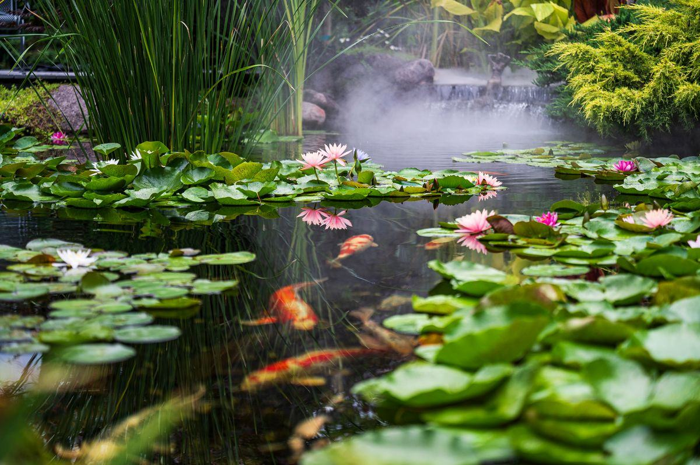

Déclaration préalable, permis de construire, plan local d'urbanisme, distances aux limites, sécurité, assurance, taxe d'aménagement : voici les repères utiles pour préparer votre projet. Ces informations sont données à titre indicatif et ne constituent pas un conseil juridique : seule votre mairie peut vous dire ce qui s'applique à votre parcelle.

Beaucoup de projets se lancent sur une conviction fausse : « ce n'est pas une piscine, donc il n'y a rien à déclarer ». En pratique, l'administration raisonne sur la nature des travaux et sur la surface créée, pas sur le mode de traitement de l'eau. Un bassin de baignade sans chlore reste un aménagement qui modifie le sol et l'aspect extérieur d'une propriété.
La démarche raisonnable tient en une phrase : allez voir votre mairie avant de signer un devis. Une visite au service urbanisme, ou un simple appel, coûte une demi-heure et évite des mois de complications. Demandez si possible une réponse écrite, même par courriel : elle vous servira de référence.
Ce sont les repères nationaux les plus couramment appliqués aux bassins et piscines. Ils constituent un point de départ, jamais une certitude : votre commune peut être plus exigeante.
Un petit bassin d'agrément ou un bassin préformé de quelques mètres carrés échappe le plus souvent à toute déclaration.
Sauf si : votre terrain se situe en secteur protégé, aux abords d'un monument historique, en site classé ou dans un périmètre soumis à l'avis de l'architecte des Bâtiments de France. Dans ces cas, une déclaration peut être exigée même pour un très petit ouvrage.
C'est le cas de la très grande majorité des bassins de jardin et des piscines naturelles familiales. Le dossier se dépose en mairie ou en ligne selon les communes.
Contenu type : formulaire Cerfa, plan de situation, plan de masse, plan en coupe du terrain, notice décrivant le projet, photographies proche et lointaine, insertion graphique. Le délai d'instruction courant est d'un mois, allongé en secteur protégé.
Au-delà de 100 m² de bassin, ou en présence d'un abri d'une certaine hauteur, la procédure devient un permis de construire, avec un délai d'instruction plus long.
À noter : le calcul de la surface prise en compte n'est pas toujours intuitif — plan d'eau seul, lagunage compris, plages incluses ou non. C'est précisément la question à poser au service urbanisme, car elle peut faire basculer votre projet d'un régime à l'autre.
Ces seuils s'entendent hors abri fermé et hors construction annexe. Si votre projet comprend un local technique maçonné, une terrasse couverte ou un pool house, ces éléments relèvent de leurs propres règles et peuvent déclencher une formalité indépendamment de la surface du bassin. Faites examiner l'ensemble du projet d'un seul tenant.
Le plan local d'urbanisme prime sur les repères généraux. C'est lui qui peut interdire, limiter ou encadrer précisément ce que vous imaginez.
Le recul par rapport aux limites séparatives. Il n'existe pas de distance nationale uniforme pour les bassins. Un recul de 2 à 3 mètres est fréquemment demandé, mais cette valeur n'a rien d'automatique : seul le règlement applicable à votre zone fait foi.
L'emprise au sol et le coefficient d'imperméabilisation. Certaines communes limitent la surface artificialisée d'une parcelle ; margelles, plages et terrasses entrent alors dans le calcul.
L'aspect et les matériaux. En secteur protégé, la couleur des margelles, la nature des pierres ou la présence d'un local technique visible peuvent être encadrées.
Les zones à risque. Terrain inondable, zone humide, servitude de passage, nappe affleurante ou risque de mouvement de terrain : autant de situations qui peuvent restreindre ou interdire le projet.
En lotissement, le règlement du lotissement et le cahier des charges peuvent imposer des reculs, des hauteurs, des types de clôture ou même interdire certains aménagements. Ces documents s'appliquent en plus du PLU, pas à la place.
En copropriété horizontale, un bassin réalisé sur une partie privative peut malgré tout nécessiter une autorisation de l'assemblée générale, en particulier s'il modifie l'aspect extérieur ou touche à des parties communes. Consultez le règlement de copropriété et, en cas de doute, le syndic.
Dans tous les cas, l'accord verbal d'un voisin ne vaut rien. Un projet conforme sur le papier et déclaré dans les règles est la meilleure protection contre un litige ultérieur.
C'est le point le plus sensible de cette page, et celui sur lequel circulent le plus d'affirmations approximatives.
La loi française impose l'installation d'un dispositif de sécurité normalisé aux piscines enterrées non closes à usage privatif : barrière, couverture, abri ou alarme conformes aux normes en vigueur.
Le statut d'une baignade naturelle au regard de ce texte n'est pas toujours évident. Sa configuration — berges en pente douce, zone de régénération plantée, absence de parois verticales — la distingue d'une piscine classique, mais cela ne vaut pas exemption automatique.
La seule attitude prudente consiste à faire confirmer votre situation par écrit auprès du service urbanisme de votre mairie et auprès de votre assureur, et à en discuter avec le professionnel qui conçoit le projet. Ne vous fiez pas à ce que vous lisez sur un forum, ni à ce que vous a dit un voisin.
Quelle que soit la réponse réglementaire, une pièce d'eau dans un jardin où vivent ou passent de jeunes enfants appelle des précautions. Quelques centimètres d'eau suffisent à provoquer un accident, et une noyade est silencieuse.
Les dispositions couramment retenues : une clôture périphérique du jardin, un portillon à fermeture automatique, une surveillance systématique et rapprochée, un apprentissage précoce de la nage, et une conception privilégiant les entrées en pente très douce plutôt que les bords francs.
Un bassin hors sol à parois hautes est parfois retenu par des familles pour cette raison, mais il ne supprime pas le risque : il le déplace.
Trois sujets que l'on découvre souvent une fois le bassin rempli, alors qu'ils se traitent en amont.
Prévenez votre assureur avant les travaux. Une pièce d'eau modifie le risque et peut nécessiter une extension de garantie. Demandez explicitement comment votre contrat traite un bassin de baignade et quelles conditions de sécurité il exige. Sans déclaration, la garantie pourrait être discutée en cas de sinistre.
En tant que propriétaire, vous répondez des dommages causés par les choses que vous avez sous votre garde. Cela concerne aussi bien un accident impliquant un visiteur qu'un dégât causé chez un voisin par une fuite ou un débordement. Vérifiez les plafonds de votre responsabilité civile et les exclusions éventuelles.
Les piscines figurent parmi les aménagements soumis à la taxe d'aménagement, assise sur une valeur forfaitaire au m² et sur les taux communal et départemental. Le traitement d'une baignade naturelle peut varier selon la qualification retenue : demandez une réponse écrite au service urbanisme et au centre des finances publiques.
Un mot sur les garanties du constructeur. Les travaux de gros œuvre relèvent en principe de garanties légales — parfait achèvement, bon fonctionnement, décennale selon la nature des ouvrages. Demandez systématiquement à votre professionnel son attestation d'assurance en cours de validité, et vérifiez qu'elle couvre bien l'activité qu'il exerce chez vous. C'est un réflexe simple, et c'est votre meilleure protection. Sur les projets de transformation d'une piscine existante, ce point mérite une attention particulière puisqu'il s'agit d'intervenir sur un ouvrage déjà construit.
Repères généraux à confirmer impérativement auprès de votre mairie : les règles locales priment et les délais varient selon les communes.
| Surface du bassin | Formalité usuelle | Délai d'instruction courant | Coût indicatif du dossier |
|---|---|---|---|
| Moins de 10 m² | Aucune, en général | — | 0 € |
| 10 à 100 m² | Déclaration préalable | 1 mois (plus en secteur protégé) | 0 € en propre, 300 – 900 € si délégué |
| Plus de 100 m² | Permis de construire | 2 à 3 mois selon le cas | 600 – 2 000 € si délégué |
| Secteur protégé, tous formats | Avis complémentaire possible | délai allongé | variable |
| Lotissement | + règlement du lotissement | à anticiper | — |
| Copropriété | + autorisation d'assemblée générale | selon calendrier des AG | — |
| Après travaux | Déclaration à l'assureur | immédiat | selon contrat |
Une déclaration préalable peut être montée par vos soins : les pièces sont accessibles et de nombreuses mairies acceptent le dépôt en ligne. La plupart des concepteurs-constructeurs proposent toutefois de préparer le dossier, ce qui présente un intérêt réel : ils connaissent les usages locaux, les points de vigilance des services instructeurs et la manière de présenter une insertion paysagère convaincante.
La question réglementaire et la question du budget se traitent ensemble : la surface déclarée, les contraintes de recul et les exigences d'aspect ont un impact direct sur le tarif final.
Une piscine naturelle se situe entre 30 000 et 80 000 € TTC, soit 700 à 1 200 €/m², une version compacte démarrant vers 20 000 €. Un bassin d'agrément va de 3 000 à 15 000 €. Les contraintes d'urbanisme peuvent modifier ces montants en imposant une implantation moins favorable.
Voir le détail des prix →Un bon devis indique qui monte le dossier d'urbanisme, ce qui se passe en cas de refus, et si le prix inclut l'insertion paysagère et les plans exigés par la mairie. Faites-le écrire noir sur blanc.
Demander mon devis gratuit →Le service urbanisme reste l'interlocuteur de référence. AquaJardin Design n'apporte aucun conseil juridique : nous transmettons votre demande à un concepteur-constructeur partenaire de votre région, qui vous rappelle sous 24 h ouvrées.
Comment nous travaillons →Les informations de cette page sont fournies à titre d'orientation générale et peuvent évoluer. Elles ne remplacent ni la consultation du plan local d'urbanisme applicable à votre parcelle, ni l'avis du service urbanisme de votre commune, ni celui d'un professionnel du droit ou de la construction. Avant tout engagement, faites confirmer votre situation par écrit.
Gratuit, sans engagement — 2 minutes pour décrire votre terrain et vos contraintes.